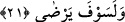

kıymetine rağmen Nistâs’ı verip Bilal’i aldı. Bu şekilde âhiret sevabını ümid ederek
onu âzâd etti.
Bir hadiste şöyle buyrulmuştur: “Allah Ebû Bekir’e merhamet eylesin. Beni kızıyla
evlendirdi, hicret yurduna taşıdı ve Bilal’i kendi parasıyla âzâd etti.” [122]
Ömer b. Hattâb (r.a.) şöyle derdi: “Bilal bizim Efendimiz’dir, Efendimiz’in de
âzâdlısıdır.” Bu söz Hz. Peygamber (s.a.)’in “Selman bizden, ehl-i beyttendir.” [123]
hadîsine benzer. Takvânın şerefine bir bak! Nasıl da azadlı köleleri eşrâfın arasına
katıyor. Kuru bir neseble öğünerek sakın aldanma. Çünkü bu insaf sınırlarını aşar.
Süheylî (r.h.) şöyle der: Ebû Bekir (r.a.)’a babası: “Keşke gücü kuvveti olan birisini
satın alsaydın da sana güç ve fayda verseydi. Bu zayıf köleleri satın almaktan ve âzâd
etmekten daha faydalı olurdu.” dedi. İşte bu söz üzerine Allah bu âyeti indirdi.
Burada zikredilenden anlaşılan odur ki fazilet açısından en yüce verme, Allah rızası
için olandır. Ortası ise âhirette karşılığını almak üzere verilendir. En düşüğü ise mübah
olan dünyevî bir amaçla verilendir. Riya ve gösteriş için ya da başka bir amaçla
verilene gelince bu mübâh değildir. Verilenin en düşük, en çirkin olanıdır.
Hz. Peygamber (s.a.)’in: “Size bir iyilikte bulunana siz de karşılık verin. Karşılık
olarak verecek bir şey bulamazsanız o kimse için duâ edin.” [124] hadîsi yapılan iyiliğe
karşı iyilikte bulunmanın meşrû ve övülen bir şey olduğuna delâlet eder. Fakat o Allah
rızası için verilenin derecesinde değildir.
21. Ve o (buna kavuşarak) hoşnut olacaktır.
Âyet gizli bir yeminin cevabıdır. Yani Allah’a yemin ederim ki vasıfları belirtilen bu
takvâ sâhibi kişi mutlaka hoşnut olacaktır.
Bu böyle bir kimsenin en güzel ve en mükemmel biçimde arzu ettiği şeylerin tümüne
ulaşacağına dâir verilmiş cömert bir vaaddir. Çünkü rıza ve hoşnudluk bununla
gerçekleşir.
Âlimlerden birisi şöyle der: Allah Teâlâ o kişiden razı, o da âhirette Allah’ın
yaptıklarının bir karşılığı olarak kendisine vereceği Cennet, ağırlama ve yakınlıktan
dolayı hoşnud olacaktır.
Bu vaad sâdece “Rabbin sana verecek de sen hoşnud olacaksın” (ed-Duhâ, 93/5)
âyeti ile Rasûlullah (s.a.)’e ve burada da Ebû Bekir (r.a.)’a inmiştir.
Baklî şöyle der: Ma‘rûf’ta fânî olana, O’nun sıfatlarıyla sıfatlanana, nihâyet rızâdaki
sıfatı Hak Sübhânehû ve Teâlâ’nın sıfatı olana kadar ârif bu rızâya eremez.